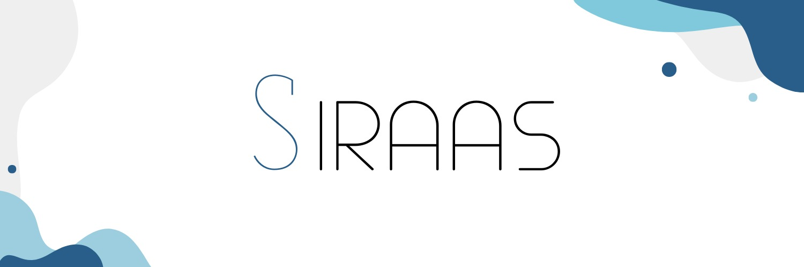

Seja bem vindo, eu sou Guilherme Rosa
Cursando Analise e desenvolvimento de Sistemas - Fatec SJC
Sobre mim
Olá, meu nome é Guilherme Rosa e estou cursando analise e desenvolvimento de sistemas na Fatec. Atualmente tenho 18 anos e estou no primeiro semestre da faculdade, tenho conhecimento do basico de HTML, CSS, Python e Flask. Meu intuito é me aprofundar nas tecnologias durante o curso e me especializar futuramente na area de desenvolvimento de jogos.
Skills
- HTML
- CSS
- FLASK
- GIT
- GITHUB
Projetos
O projeto SIRASS é um sistema web de gerenciamento de atestados medicos e de avaliações de equipes Scrum para instituições de ensino e pequenas empresas. Minha abordagem dentro do projeto foi na criação da pagina de gerenciamento de atestados dos alunos e do docentes, trabalhando em principal no backend da pagina , utilizando do HTML e Python com a mini framework do Flask para criação da tabela de atestados e filtro de pesquisa.
